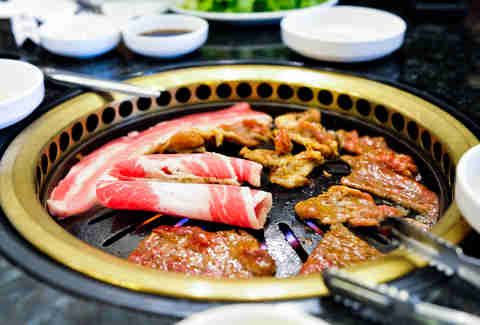

about me
the grinch
You're the-the-the-- The-the-the-- The Grinch!
the best kind of food

chicken dance
On a non-feminist, but equally as fun note… Have you noticed that America’s favorite group dance after the Electric Slide to The Dougie has more or less disappeared from the wedding reception’s dance floor? The chicken dance’s armpit flapping and fingering yapping were as American as saluting and doing the wave. How could it possibly disappear from DJ’s playlists, where has our patriotism gone? What the cluck? For 2.47 minutes of glorious “dunin nanana dunin nanana,” children to grandmas, horny groomsmen to likewise priests would jump and twist, then do-si-do as if they were happiest of American southerners at a Bavarian festival. Sadly today, the incessant music has stopped. What once inspired droves of drunken wedding guest or children high on wedding cake to the center of the room has been removed from one of our greatest lifetime celebrations. In the words of Don McLean has “The day the music died,” already come and gone and taken the chicken dance with it? My best fowl conspiracy theory blames the most likely culprit – the children. Yes, the children. Weddings have evolved into more and more of an adult affair. First, in a tighter economy fewer and fewer fiancés can justify a $45 plate of chicken nuggets, especially, as we all know, they don’t always eat everything (adult plates average $75-$95 without alcohol). Secondly, more weddings go late into the wee hours of the night, way past the young ones’ bedtime. Third, weddings are increasingly becoming a great excuse for mom and dad to have a kid-free night and they want to get Kevin-Bacon footloose like all the other kidless guests. And fourth, which you can blame the wedding industrial complex for, is that weddings tend to be higher end luxurious and classier events than they used to be. Weddings today are like fancy restaurants; only Daddy Warbucks would bring a kid to French Laundry, Per Se or L’Espalier. Without the kids this poultry song’s popularity is just paltry. The chicken dance is the victim of kitsch too. Just like the Macarena and mosh pitting, there’s a hierarchy of cool pop culture and unison dance moves aren’t even on the top 100 list. Only line dancing has survived in some regions. However, I’d love to see a chicken dance revival that culls from the chicken moves in Arrested Development. Wedding guests still love dancing to van Morrison at weddings, it’s a classic afterall; but one has to wonder if overplayed songs like Journey’s Don’t Stop Believin’ will be next on the song list chopping block? When a song gets cheesy, the dance childish, or a wedding tradition becomes overused and cliché it falls out of favor and tradition. Weddings have just become too cool for their own good. Don’t worry though, chicken itself has not disappeared altogether from weddings, there’s still the free-range, organic one being served on a plate; however, we’ve just become all too Marty McFly chicken to act like one at weddings.